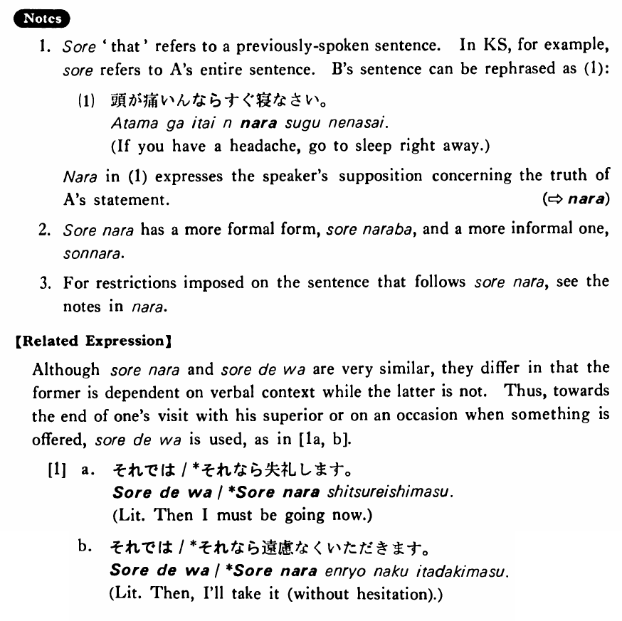

それなら (B. 419)
- (ks).
- A:頭が痛いんです。 B:それなら直ぐ寝なさい。
- A: I have a headache. B: In that case, go to sleep right away.
- (a).
- A:映画を見に行きませんか。 B:明日試験があるんです。 A:それなら、明後日はどうですか。
- A: Wouldn't you like to go see a movie? B: I have an exam tomorrow. A: Then, how about the day after tomorrow?
- (b).
- A:日本にはどのぐらいいましたか。 B:三年です。 A:それなら、日本のことはよく知っているでしょうね。
- A: How long did you stay in Japan? B: Three years. A: Then, you must know a lot about Japan.
